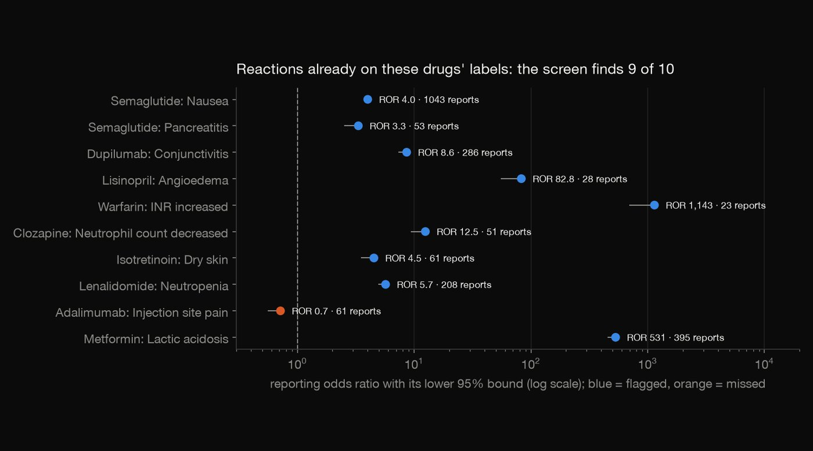
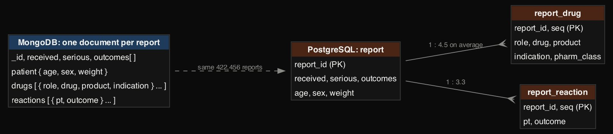
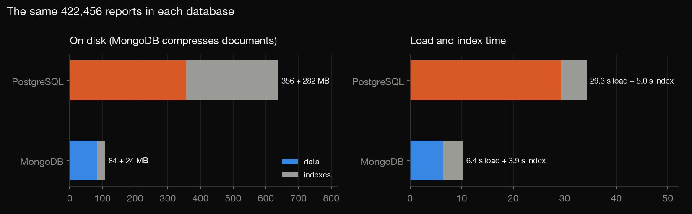
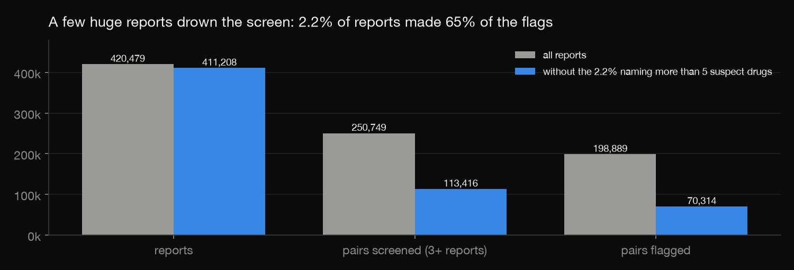
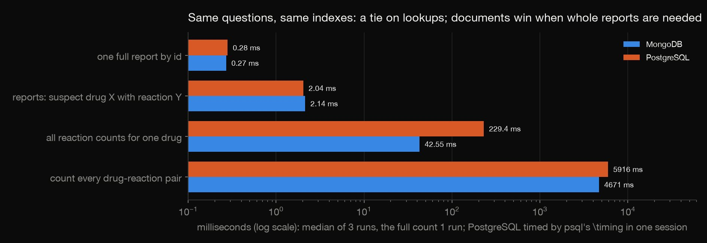
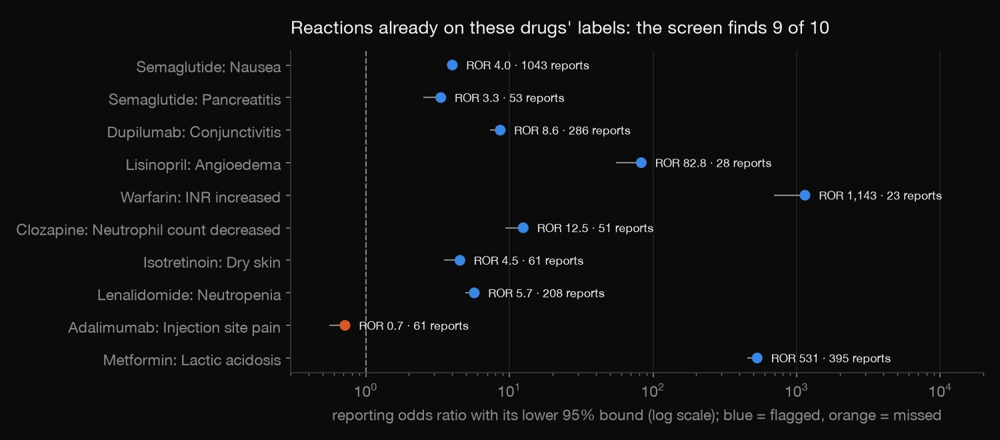

SQL & NoSQL · Data engineering · 2026-10
Drug Safety Signals in MongoDB and PostgreSQL
A quarter of FDA adverse event reports (422,456) loaded as documents in MongoDB and as tables in PostgreSQL, screened for drug-safety signals in both, and checked against each other and against plain Python.

A disproportionality screen flags what to review; it is not evidence that a drug caused anything. FAERS reporting is voluntary and biased, and duplicate cases across sources are not merged here.
01 — The problem
The FDA publishes every adverse event report it receives as nested JSON. Each report holds a patient, a list of drugs (some suspected, some just being taken) and a list of reactions. Drug-safety teams screen these reports for signals: drug–reaction pairs that are reported together more often than chance.
The data fits a document database naturally, and the statistics fit SQL. Which database is better for which part of the job? Do they give the same answer? And does the screen actually find known problems?
02 — What I built
One quarter of FAERS (April–June 2026, 422,456 reports from openFDA), loaded two ways from the same slimmed documents:
- MongoDB: one document per report, with multikey indexes on drugs and reactions.
- PostgreSQL: three tables (report, report_drug, report_reaction) with constraints and indexes.
- A disproportionality screen (PRR, ROR, chi-square, Evans criteria) in SQL, the same counts as a MongoDB aggregation, and a third implementation in plain Python to check both.
- A head-to-head on four everyday questions, timed fairly.
03 — How it was built
- 01
Slim each report once
openFDA ships 3.4 GB of zipped JSON for the quarter.
parse.pystreams it and keeps one slim document per report: dates, seriousness, reporter, age, sex, weight, every drug and every reaction. The free-text case narrative is dropped.Drug names are messy. A drug is named by FDA's harmonised generic name when openFDA matched it (81.6% of drug rows), else by the reported active substance, else by the product name. Both databases are then fed from the same file.
generic = norm((of.get("generic_name") or [None])[0]) - 02
Model it twice
In MongoDB a report is one document with nested arrays. In PostgreSQL it becomes three tables, with an average of 4.5 drug rows and 3.3 reaction rows per report. Both load in under a minute.
The relational schema paid off at once. Its CHECK on the drug role rejected the load: 548 rows carry role 4, "drug not administered" in the newer E2B(R3) standard, which the openFDA field reference does not list.


role smallint CHECK (role IN (1, 2, 3, 4)), -- 1 suspect, 2 concomitant, 3 interacting, 4 not administered (E2B R3) - 03
Screen for signals in SQL
For each suspect drug and reaction, a 2×2 table compares how often the reaction is reported with this drug against all other drugs. From it come the proportional reporting ratio (PRR), the reporting odds ratio (ROR) with a 95% interval, and a chi-square. A pair is flagged when it has at least 3 reports, PRR ≥ 2 and chi-square ≥ 4.
The first run flagged 79% of all pairs, so something was off. 9,271 reports (2.2%) name more than 5 suspect drugs; one names 2,738 suspect rows. Each such report pairs every drug with every reaction, and together they made 65% of the flags. The main screen leaves them out, and a sensitivity table keeps both counts.

CREATE TABLE signal AS SELECT *, (prr >= 2 AND chi2_yates >= 4) AS is_signal FROM pg_temp.screen(5); - 04
Compute the same counts in MongoDB
The same pair counts come from an aggregation pipeline. It reduces each report's suspect drugs and reactions to sets, skips reports with more than 5 suspects, unwinds both arrays and groups. MongoDB and PostgreSQL agree on all 113,416 pairs, with not one count different.
{"$match": {"$expr": {"$lte": [{"$size": "$d"}, 5]}}}, # as the SQL screen: at most 5 suspect drugs - 05
Time them fairly
My first timings made PostgreSQL look almost 40 times slower on a single lookup (13.8 ms against 0.36 ms), but they were measuring the start-up of the
psqlprogram. PostgreSQL is now timed with psql's own\timinginside one session, and MongoDB with pymongo, on the same indexes.Lookups tie. Questions that need whole reports favour documents, because there is no join to do.

col.create_index("drugs.drug") # multikey: one index entry per drug in the array - 06
Check it a third way
check.pyignores both databases and recomputes everything in plain Python from the slim documents:- the counts: documents = MongoDB = PostgreSQL;
- for all 113,416 screened pairs, the four cells of the 2×2 table, PRR, ROR and chi-square.
assert (a, b, c, d) == (row.a, row.b, row.c, row.d), row
04 — Results
The screen finds what is on the labels. Of 10 reactions already in these drugs' US labels, 9 are flagged:
- semaglutide and nausea: 1,043 reports, ROR 4.0;
- dupilumab and conjunctivitis: ROR 8.6;
- lisinopril and angioedema: ROR 82.8;
- metformin and lactic acidosis: ROR 531.
The miss is telling. Adalimumab and injection-site pain (ROR 0.72) is hidden because so many injectable biologics report injection-site reactions that the comparison group drowns it.

Flags are not findings. The strongest flags also include the diseases the drugs treat (adalimumab with Crohn's disease, PRR 12.5) and product problems (semaglutide with device leakage). A screen points reviewers at pairs; it does not show cause.
| Question | Mongo | PG |
|---|---|---|
| One report | 0.27 ms | 0.28 ms |
| Drug X + reaction Y | 2.1 ms | 2.0 ms |
| One drug's reactions | 43 ms | 229 ms |
| Every pair | 4.7 s | 5.9 s |
05 — What I'd do next
- Merge duplicate cases reported by more than one source.
- Group reactions with MedDRA's hierarchy (for example nausea and vomiting together).
- Use a Bayesian screen (empirical Bayes shrinkage) so that pairs with few reports don't dominate.
- Follow a signal across quarters.